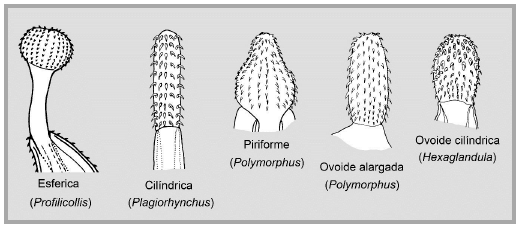

Acantocéfalos
Diversidad morfológica del phyllum Acantocephala:
a) Polymorphus acutis
b) Polymorphus mathevossianae
c) Corynosoma semerne
d) Corynosoma sudsuche
e) Filicollis trophimenkoi
Los acantocéfalos son un grupo monofilético de helmintos exclusivamente parásitos. Presentan una probóscide espinosa en el extremo anterior, mediante la cual se fijan a los tejidos de su hospedador. Son endoparásitos obligados del intestino de vertebrados.
La morfología de los acantocéfalos presenta una gran adaptación a la vida parásita, con una reducción de los sistemas muscular, nervioso y excretor, y la ausencia del sistema digestivo. Comprenden aproximadamente 1200 especies.
Tipos morfológicos de probóscides.
Interés veterinario
Ciclo de vida de Macracanthorhynchus sp.
Los adultos suelen parasitar a cerdos y jabalíes, aunque es posible encontrarlos en otros vertebrados (incluído el ser humano) y no suelen vivir más de un año adheridos a la pared del tracto digestivo de su hospedador.
Luego de que la hembra deposite sus huevos (unos 260.000 por cada una), éstos abandonan el cuerpo del hospedador con las heces para luego ser consumidas por las larvas de algunas especies de escarabajos. Una vez dentro de estos hospedadores, los huevos eclosionan y liberan la larva al interior del cuerpo. Pasan por un periodo de desarrollo gradual y para aproximadamente el día 80, el acantocéfalo juvenil ya está aptos para infectar al cerdo cuando éste ingiera al escarabajo.
Acantocefaliosis en humanos
La mayor parte de las acantocefaliosis humanas se presentan en niños de áreas rurales que ingieren escarabajos parasitados de modo accidental, o en algunos casos los consumen ligeramente tostados. En algunas regiones de China los coleópteros son administrados a los niños ya que se cree que son efectivos para tratar la nicturia (micción nocturna).
Además, y aunque es raro, la infección humana con acantocéfalos también puede producirse por consumo de pescado crudo o cangrejos infectados con Polimórfidos, o mediante infecciones accidentales generalmente con acantocéfalos comunes de ratas (que normalmente parasitan cerdos). Estos últimos se describen como patógenos y dolorosos, debido a su penetración profunda, y deben ser eliminados mediante cirugía.
Ejemplar de un acantocéfalo. A la izquierda del cuerpo, su probóscide de anclaje.